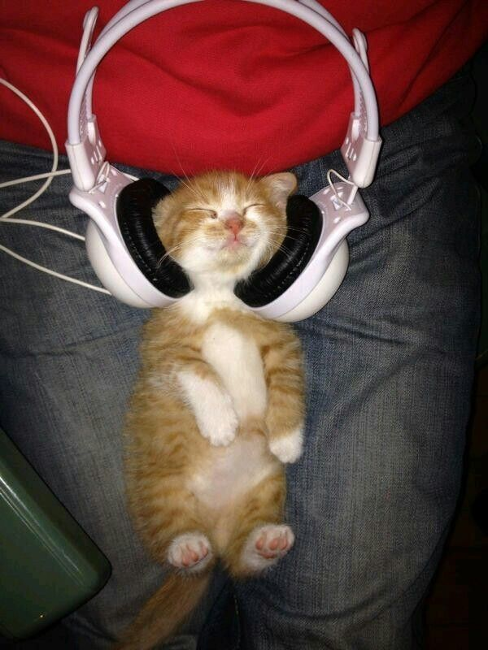
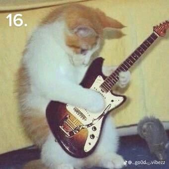
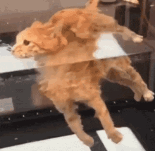
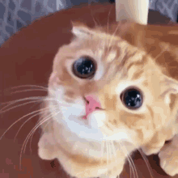
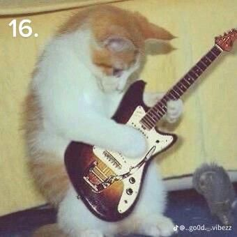
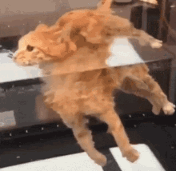
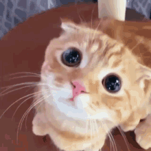

Me gustan mucho las ciencias, en especial a la biología, le tengo una gran pasión, me gustaría también estudiar algo relacionado (despues de estudiar A1), asimismo las ciencias de la salud me gustan mucho. Por otro lado, las artes me encantan, dibujo, escribo, leo, pinto, toco un poco de guitarra y estoy en proceso de aprender violín, me gusta mucho el cine y escuchar música, escucho un poco de todo.
Soy una persona que le pone su máximo esfuerzo a todo, me parece a veces gracioso que mis amigos me digan que no saben como puedo hacer tanto jajajaj, siempre les digo que es organización, pero la vd hay días en que me falla y también no entiendo como lo hago jajajja, de que solo este ciclo pasado fuí uno de los que hicieron lienzos en la prepa, gané dos interprepas, ya tengo una publicación en un libro de la unam, hice el ETE, fundé club de bio y no estoy dejando que muera, soy admin de club de cine y foto, astronomia, jardineria, idiomas, lectura y artes, hice Jovénes Hacia la Investigación y en Junio hago mi estancia corta y todo eso con una vida social bastante activa.
Sentí que fui muy presumido, pidoperdon 😿, no soy así y cualquier que me conozca te lo puede decir, siento que soy un buen amigo, de que si ocupas algo ahí estaré (ya sea si es solo pasar el tiempo o desahogo), es algo dificil aburrirse conmigo y siempre intento apoyar a la gente, tengo mucha iniciativa y a veces parezco podcast jajaja.
MMM, no sé que más decir, me gustan mucho los gatos aunque no tenga uno, hay veces en las que investigo mucho de un tema y lo domino, casi diario estoy al borde de que me atropellen jajajaja y no sé, si alguien lee esto y quiere conocerme hablemeeeeeeee.
Me indentifico con los gatos jajajaa, siento que soy un gato naraja y por eso se me hizo buena idea ponerlos:

 




